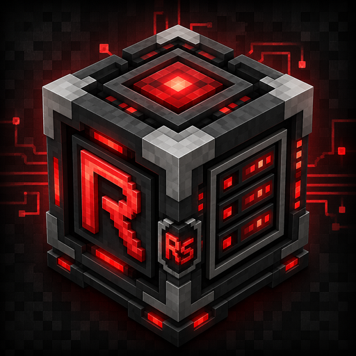

Large Storage Disks
Expanded item and fluid disk tiers for large Refined Storage networks.

Ongoing Reborn Storage continuation
Massive storage disks, multiblock autocrafting, and advanced wireless tools—maintained for current and future Minecraft releases.
Alpha software: back up important worlds before updating.
Expanded item and fluid disk tiers for large Refined Storage networks.
Build a scalable crafter with more pattern capacity and CPU-based speed.
Extended transmitter range and an all-in-one Super Wireless Grid.
Autocrafting tasks survive world saves and reloads.
6.0.0-alpha.6
This is the first supported release. Future Minecraft versions will receive their own compatible Redone Storage releases.
Based on the original Reborn Storage work by Modmuss50, Gigabit101, and contributors. Redone Storage preserves the original MIT attribution.
View the original source project